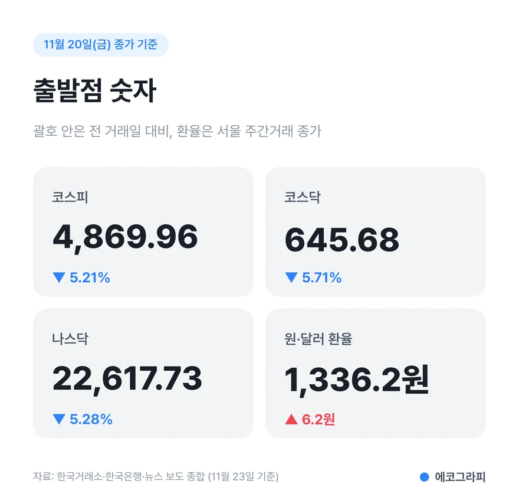
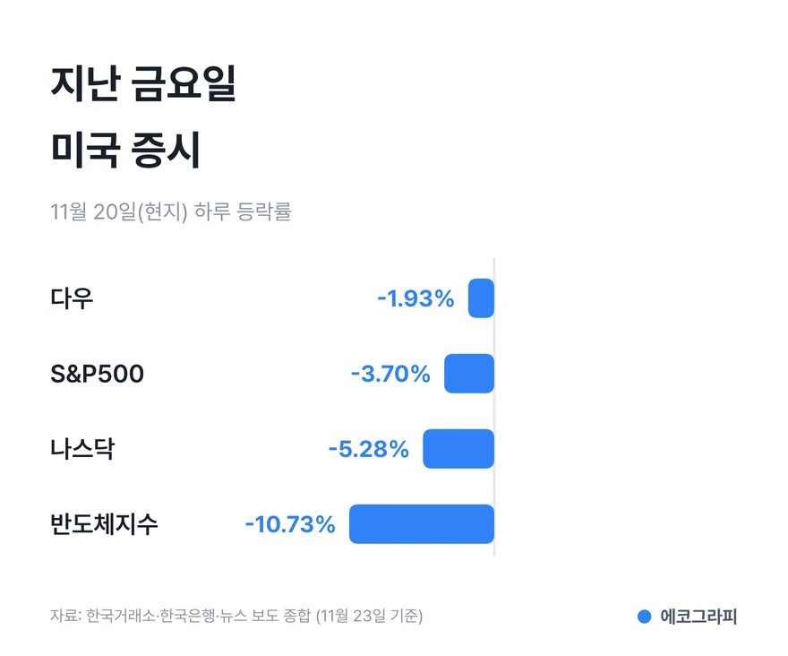
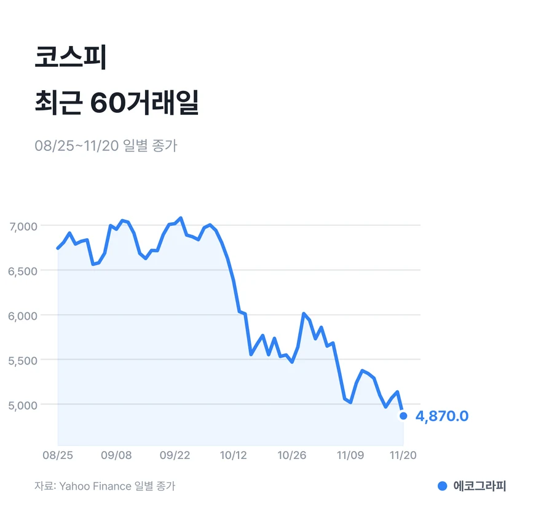
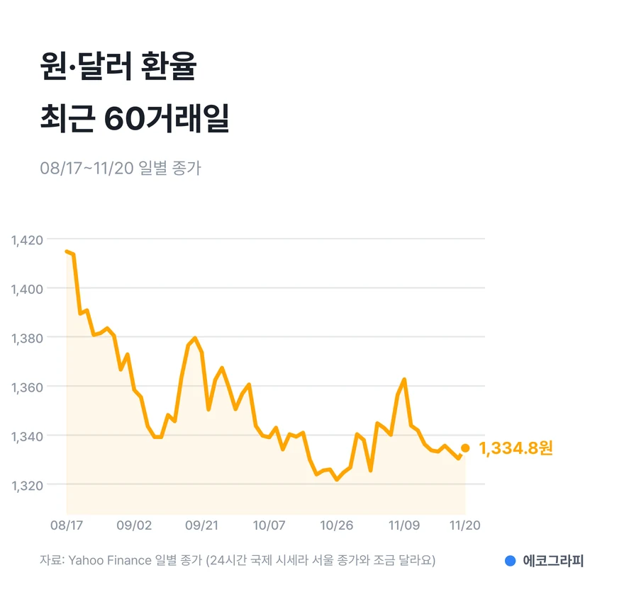
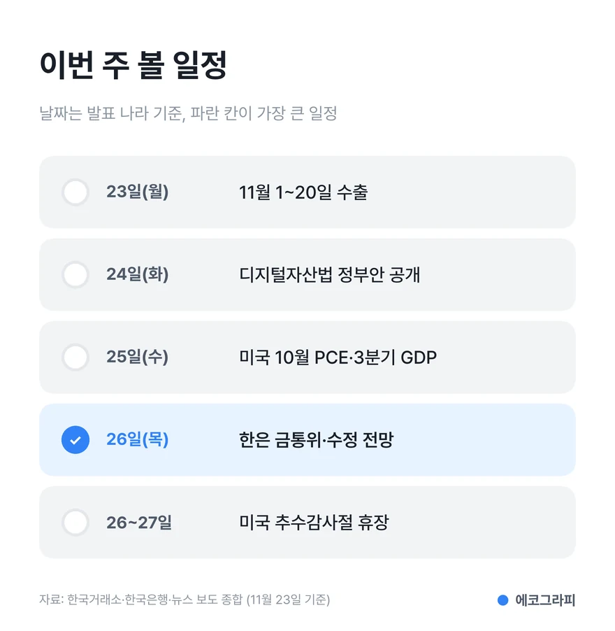

20일(금) 코스피는 하루 5.21% 내린 4,869.96, 코스닥은 5.71% 내린 645.68으로 마감했어요. 두 시장 모두 매도 사이드카가 나온 날이에요(금요일 저녁 속보). 원·달러 환율 서울 종가는 1,336.2원이었어요. 한 주 전체 흐름은 어제 아침 주간 정리에 있어요.

같은 날 밤 미국에선 나스닥이 5.28%, S&P500이 3.70%, 다우가 1.93% 내렸어요. 필라델피아 반도체지수는 하루에 10% 넘게 빠졌어요. 엔비디아를 둘러싼 불안이 반도체 전체로 번진 영향이에요.

60거래일로 넓혀 보면 코스피는 9월 말 7,000선 위에서 고점을 찍은 뒤 내려오는 흐름이 이어지고 있어요. 환율은 8월 중순 1,410원대에서 내려와 최근엔 1,330원대에서 움직이고 있어요. 주가가 크게 빠진 것에 비하면 환율은 조용한 편이에요.


2. 주말에 나온 이슈
① 증안펀드 '가동 준비' 착수: 22일(일) 부총리 겸 재정경제부 장관, 한국은행 총재, 금융위원장, 금융감독원장이 긴급 시장상황점검회의를 열었어요. 시장 상황에 따라 증안펀드를 바로 가동할 수 있도록 준비 작업을 시작하기로 했어요. 준비 착수가 곧바로 주식을 산다는 뜻은 아니에요. 증안펀드가 뭔지는 오늘의 경제 용어 증권시장안정펀드 글에 정리했어요.
② 함께 나온 대책: 상장회사가 하루에 낼 수 있는 자사주 매수 주문 한도를 24일부터 3개월간 완화하고, 금감원·거래소가 불법 공매도를 3개월간 집중 감시해요. 신용융자·반대매매 흐름도 살펴보고 반대매매 사전 안내를 강화하기로 했어요.
③ 엔비디아 불확실성: 중국 반도체 판매와 관련해 미국 정부·의회의 조사 압박이 이어지고 있다는 보도가 나왔어요. 아직 결론이 난 건 아니어서, 관련 뉴스가 나올 때마다 반도체주가 크게 흔들릴 수 있어요.
3. 이번 주 일정 미리보기

23일(월): 11월 1~20일 수출 숫자가 나와요. 반도체 수출 흐름이 관심이에요. 일본 증시는 공휴일로 쉬어요. 미국은 11월 PMI 예비치와 HPE 실적이 있어요.
24일(화): 금융위원회가 디지털자산법 정부안을 공개할 예정이에요. 한국은행 11월 소비자심리지수, 미국 소비자신뢰지수와 델·HP 실적도 나와요.
25일(수, 미국):10월 PCE 물가와 3분기 GDP 수정치가 같은 날 나와요. 보도에 따르면 시장은 PCE가 전월보다 0.3% 오를 것으로 보고 있어요. 연준 베이지북도 이날 나와요.
26일(목):한국은행 금통위가 올해 마지막으로 열려요. 현재 기준금리는 연 3.00%이고, 설문에 응한 증권사들은 대부분 3.25%로 0.25%p 인상을 예상했어요. 같은 날 한은이 새 경제 전망도 내놓아요. 미국 증시는 추수감사절로 쉬어요.
27일(금): 미국 증시는 블랙프라이데이로 오후 1시(현지)에 일찍 닫아요.
이번 주 공모주 일정(케이엠에프·에이엔에이치스트럭쳐 청약, 엠비디 상장)은 이번 주 공모주 글에 따로 정리했어요. 공모주가 처음이라면 공모주 청약 기초 글부터 보세요.
4. 이번 주 볼 포인트 3가지
① 월요일 출발: 금요일 미국 반도체지수가 크게 빠진 뒤라, 주말 대책이 국내 시장 분위기를 얼마나 바꿀지가 첫 관심이에요.
② 물가와 금리: 미국 PCE가 예상보다 높게 나오면 연준의 금리 인상 걱정이 다시 커질 수 있어요. 한은이 금리를 올릴 땐 '얼마나 더 올릴지'에 대한 힌트도 같이 봐요.
③ 짧은 한 주: 미국이 26일 쉬고 27일엔 반나절만 열려서 거래가 얇을 수 있어요. 거래가 적을 땐 작은 뉴스에도 가격이 크게 움직이기 쉬워요.
이번 주 해볼 것: 변동이 큰 주에는 내 계좌에 신용융자·미수 같은 빌린 돈이 있는지 먼저 확인해 보세요. 투자 대기자금 흐름은 투자자예탁금 글을 참고하세요.
자주 묻는 질문
증안펀드 준비를 시작하면 바로 주가가 오르나요?
그렇지 않아요. 준비 착수는 '필요하면 바로 쓸 수 있게 해 둔다'는 뜻이에요. 실제로 투입될지, 투입돼도 효과가 얼마나 될지는 시장 상황에 달려 있어요.
한은이 금리를 올리면 대출 이자는 바로 오르나요?
변동금리 대출은 기준이 되는 금리(코픽스 등)가 바뀌는 시점에 맞춰 몇 주~몇 달에 걸쳐 반영돼요. 고정금리 기간 중이면 바로 바뀌지 않아요.
미국이 쉬는 날엔 한국 증시도 쉬나요?
아니에요. 26일 한국 증시는 정상적으로 열려요. 다만 미국 시장 참고 지표가 없어 거래가 조용할 수 있어요.
PCE는 왜 그렇게 중요해요?
연준이 물가 목표(2%)를 볼 때 가장 중요하게 쓰는 지표예요. 그래서 금리 전망에 바로 영향을 줘요.